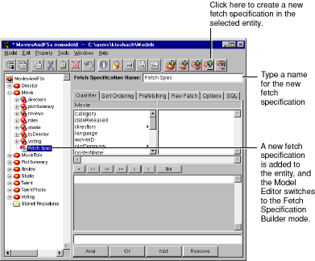

Figure 40. Adding a Fetch Specification to an Entity
In addition to specifying how a fetch specification retrieves its data, you can specify other options, such as sort orderings and performance tuning settings. The following sections describe the possible configurations and their uses.
Table of Contents Next Section
 Table of Contents
Table of Contents  Next Section
Table of Contents
Next Section
Table of Contents  Previous Section
Table of Contents Next Section
Previous Section
Table of Contents Next Section